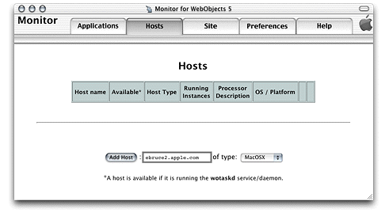
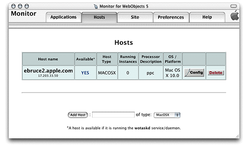

An application host is a machine that runs application instances. For Monitor to be able to identify a host, it has to be running a wotaskd process. See "Choosing What to Install" and "Confirming That wotaskd Is Active".
Before you can deploy applications, you need to tell Monitor which hosts you want to use for deployment. (See "Load Balancing" for additional information regarding load balancing and hosts added in Monitor.) Figure 6-1 shows Monitor's Hosts page, which you use to add and configure hosts.
Figure 6-1 The Hosts page
The machine must be running a wotaskd process in the port that Monitor sends its lifebeats to.
Avoid
using a loopback address (a connection that does
not go over the network), such as localhost or 127.0.0.1.
If you do, it must be the only application host in your site.
Figure 6-2 shows the Hosts page after a host has been added.
Figure 6-2 Newly added host in Monitor
To change the configuration of an application host, click the Config button on the Hosts page. A page similar to the one in Figure 6-3 appears. It allows you to set the type of the host and to resynchronize configuration information if needed.
Figure 6-3 Host configuration page
![[image: ../Art/hostconfigure.gif]](../Art/hostconfigure.gif)
To display the configuration for a host, click YES, on the Hosts page. A page similar to the one in Figure 6-4 is displayed in a separate Web browser window.
Figure 6-4 Host configuration information page
![[image: ../Art/monwotaskdconfig.gif]](../Art/monwotaskdconfig.gif)
This page displays the current state of the host in several sections.
The section visible in Figure 6-4 shows the contents of
the host's SiteConfig.xml file.
For more information on the SiteConfig.xml file,
see "Configuration Files".
The next section shows the adaptor configuration sent to local HTTP adaptors, which lists all running application instances that wotaskd knows about (this includes Monitor processes).
<?xml version="1.0" encoding="ASCII"?>
<adaptor>
<application name="JavaMonitor">
<instance id="-8888" port="8888" host="ebruce2.apple.com"/>
</application>
</adaptor>
Note that the instance ID of the Monitor process is negative. When wotaskd receives a lifebeat from an application instance that has not been registered (added to your site through Monitor), it discloses the instance to the Web server with a negative ID number. This allows developers (internal users) to connect to instances through the HTTP adaptor for testing purposes. To address security concerns, external users can connect to instances with negative ID numbers only if they know the instance's port number.
To connect to a development instance through the Web server,
the instance must run on the same computer that the Web server runs
on, and the computer must be the localhost.
Next is the local adaptor configuration sent to remote HTTP adaptors. This section lists all instances that are active, registered (configured through Monitor), and available to external users.
<?xml version="1.0" encoding="ASCII"?>
<adaptor>
<application name="Payroll" urlVersion="4">
<instance id="1" port="2001" host="ebruce.apple.com"/>
</application>
<application name="HR" urlVersion="4">
<instance id="1" port="2002" host="ebruce.apple.com"/>
</application>
</adaptor>
The next section shows the contents of the HTTP adaptor configuration file. If you tell wotaskd to write the HTTP adaptor configuration file, it lists all the registered application instances on the site, whether they are running or not. (This file is identical across all the site's application hosts.) See "The HTTP Adaptor Configuration File" for more information and an example of the file's contents.
The last section lists information on the wotaskd process's environment, including its port and multicast address.
The Configuration Directory is: /Library/WebObjects/Configuration/ Wotaskd is NOT writing WOConfig.xml to disk The multicast address is: 239.128.14.2 This wotaskd is running on Port: 1085 Wotaskd is NOT responding to Multicast WOAssumeApplicationIsDeadMultiplier is 4 The System Properties are: ...
© 2001 Apple Computer, Inc. (Last Updated August 25, 2001)